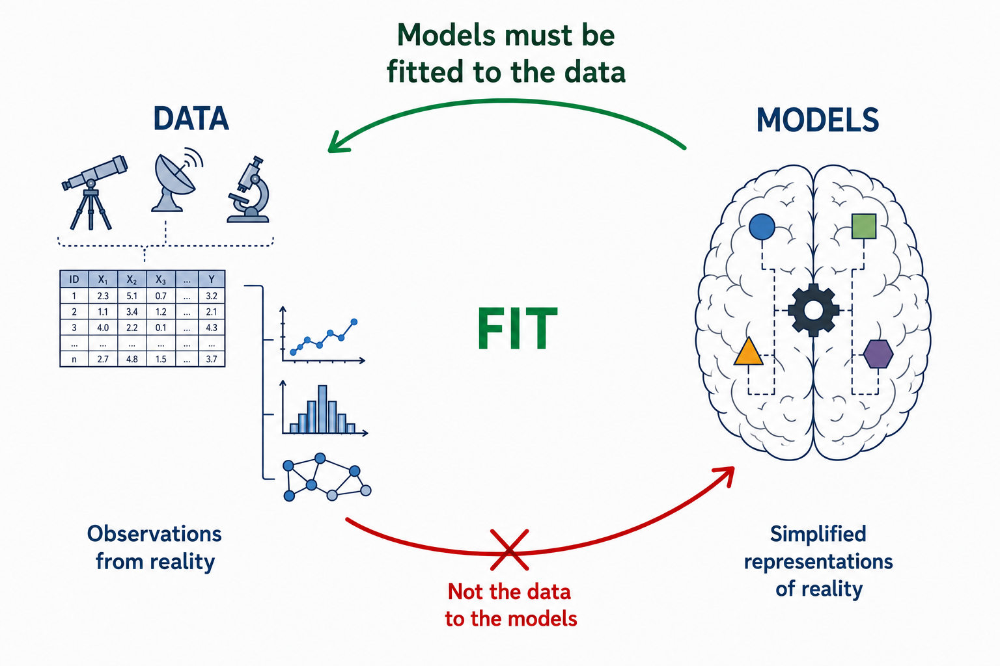
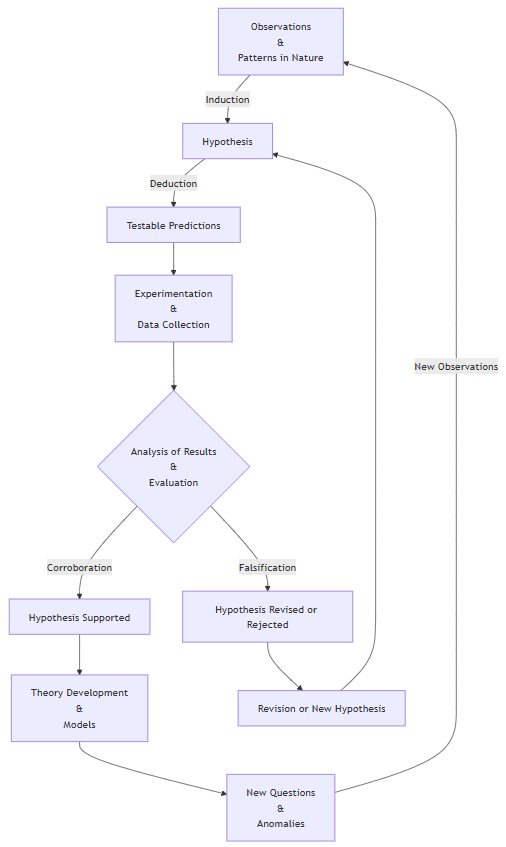

Introduction to Machine Learning
Technical Notes
1 From Data to Models
The maxim commonly attributed to the English philosopher Francis Bacon, scientia potentia est — knowledge is power — provides a useful starting point for understanding both the scope and the limitations of what we now call Data Science. Although nothing resembling the modern discipline existed in Bacon’s time, his view of knowledge contains the germ of an idea that remains fundamental to Data Science: claims about the world should ultimately be accountable to empirical evidence.
The debate over how human beings acquire knowledge long predates Bacon. It can be traced back to Greek philosophy, particularly Plato and Aristotle, and was later developed by medieval scholasticism through the problem of universals and the opposition between realism and nominalism. Bacon, however, placed particular emphasis on experience. He argued that scientific knowledge should be grounded in careful and systematic observation of nature, with inductive reasoning playing a central role in moving from particular observations towards more general claims. Although the specific procedures of the Baconian method did not have a lasting influence, the broader principles behind his approach were highly influential in the development of scientific methodology. For this reason, Bacon is commonly regarded as one of the founders of the scientific method and as the father of empiricism.
This distinction provides a useful conceptual starting point for Data Science. We can separate two closely related components of the process of acquiring knowledge: the empirical evidence obtained from observations, represented by data, and the conceptual or mathematical structures through which we interpret that evidence, represented by models.
In this context, a useful working definition is:
A model is an abstract and simplified representation of some aspect of reality.
This definition immediately establishes an important principle: models must be fitted to the data, not the data to the models.
Data are not reality itself. They are observations or measurements of reality and may contain noise, measurement error, sampling bias, or other imperfections. Nevertheless, they constitute the empirical evidence against which our models must be evaluated. If a model is inconsistent with the available evidence, we should question, revise, or replace the model rather than manipulate the evidence merely to preserve it.
Moreover, there is generally no single model capable of completely representing a phenomenon. Different models may capture different aspects of the same underlying process, rely on different assumptions, or provide different trade-offs between simplicity, interpretability, and predictive performance. Models should therefore be regarded as provisional representations that can be refined or replaced as new evidence becomes available.
This relationship between data and models is summarised in Figure 1.

This emphasis on empirical evidence does not diminish the importance of constructing models to interpret the data. On the contrary, model construction is an essential part of scientific reasoning. To understand why, it is useful to return to the distinction between induction and deduction.
Inductive reasoning allows us to move from particular observations towards more general hypotheses. It is therefore crucial for recognising patterns and generating explanations. However, induction has a fundamental limitation: observations can support a general conclusion, but they can never prove its universal truth with logical certainty.
This difficulty was famously formulated by David Hume in the eighteenth century and is known as the problem of induction. Past observations, however numerous or consistent, do not logically guarantee that the same regularity will continue to hold in the future.
A well-known illustration of this problem is the turkey illusion, a variation of an example originally introduced by Bertrand Russell using a chicken. Consider a turkey that observes that every morning its owner brings it food. After hundreds of consistent observations — on rainy days and sunny days, in warm weather and cold — the turkey becomes increasingly confident that it will continue to be fed every morning. Yet one day, instead of being fed, it is slaughtered. A single event contradicts a conclusion that appeared to be supported by an overwhelming amount of previous evidence.
The lesson is fundamental: no number of past observations can logically guarantee the truth of a universal claim about the future. The turkey’s mistake was not that it relied on observations, but that it extrapolated an observed regularity without understanding the underlying mechanism responsible for it — in this case, the intentions of the person feeding it.
Karl Popper developed this problem further by emphasising falsifiability. Induction cannot establish a universal scientific theory as certainly true merely by accumulating confirming observations, whereas evidence inconsistent with its predictions may provide grounds for rejecting or revising it. In practice, scientific testing is more complicated than a single observation mechanically falsifying an entire theory, but the underlying principle remains important: scientific models must expose themselves to empirical testing.
None of this implies that induction is a poor method of reasoning. It serves a different purpose. Induction remains essential for identifying patterns and generating hypotheses and conjectures. It can be understood in probabilistic rather than absolute terms: observations can increase or decrease the degree of support for a hypothesis without certifying its truth.
Scientific inquiry therefore combines induction and deduction. Induction helps us move from observations towards hypotheses; deduction allows us to derive testable predictions from those hypotheses and compare them with empirical evidence. Successful predictions provide support for a hypothesis under the conditions tested, but they do not establish it as an absolute truth. Failed predictions may require the hypothesis, its assumptions, or even the experimental procedure to be reconsidered.
For our purposes, the scientific process can be usefully represented through a hypothetico-deductive cycle, consisting broadly of the following stages:
- Systematic observation of a phenomenon.
- Formulation of hypotheses or models to explain the observed patterns.
- Deduction of testable predictions from those hypotheses.
- Empirical evaluation of the predictions using new observations or data.
- Revision, refinement, or replacement of the hypotheses in light of the evidence.
Figure 2 illustrates this iterative process.

The construction of useful models is, of course, considerably more difficult than this simplified representation might suggest. Choosing an appropriate representation, defining an objective, estimating model parameters, evaluating performance, and determining whether the resulting model generalises beyond the observed data introduce a new set of problems.
For this reason, the process of building models deserves separate treatment and is the subject of the next section.